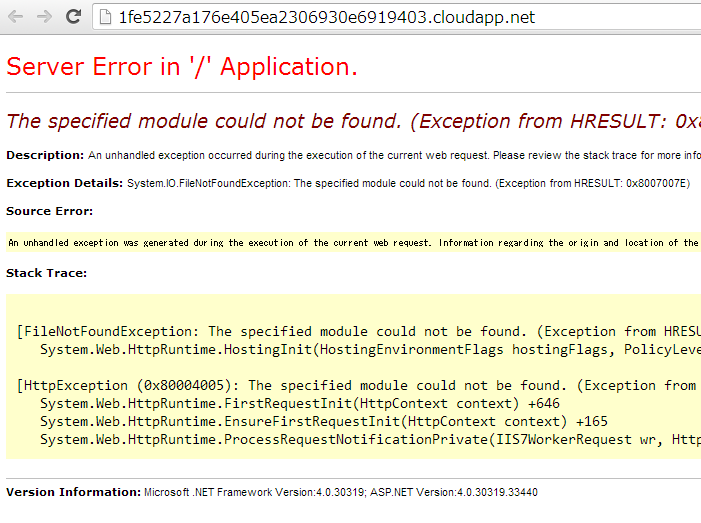

Helios を Azure Cloud Service で使う
2013/12/13 追記 Microsoft.Owin.Host.IIS 0.1.1-pre では、WebRoleのStartup taskの作成 の問題は解決されました。
巷で話題のHeliosをCloud Serviceで使おうとしたらちょっとハマりました。基本的には、Checking out the Helios IIS Owin Web Server Hostと同じですが、Cloud Service、WebRoleの組み合わせでDeployしたら下記のようなエラーになります。
{kind=link}
最初、なにかアセンブリが足りないのかと思って、Fusion Logを調べたりしていたのですが、結局Helios内で使っているnavite code dllが依存しているVC12のランタイムが無かったという話でした。startup taskを用意してVC12のランタイムを入れてやると上手く動くようになります。
ここでは、Cloud Serviceの作成から、Heliosの組み込み、startup taskの作成まで一通り説明します。
手順の確認
WebRoleの作成からHeliosのインストールまで
- Cloud Service を作ってWebRoleを追加します普通にCloudServiceを作成し、WebRoleを追加します。テンプレートはEmptyにします

- projectを、.NET 4.5.1 を使うようにします

コンパイルして問題無いのを確認します。
System.Webの参照を全て削除します
nugetを使って、Microsoft.Owin.Host.IISをインストールします:
Install-Package Microsoft.Owin.Host.IIS -Pre
下記のような参照になります

Startup Classの設定
下記のようなStartup classのコードを追加します:
using System;
using Microsoft.Owin;
using Owin;
[assembly: OwinStartup(typeof(WebRole1.Startup))]
namespace WebRole1
{
public class Startup
{
public void Configuration(IAppBuilder app)
{
app.Run(async context => // IOWinContext
{
context.Response.StatusCode = 200;
context.Response.ContentType = "text/html";
await context.Response.WriteAsync("Hello Herios. Time is: " + DateTime.Now.ToString());
});
}
}
}
これで、WebRoleを動かしてみて、動くことを確認します。
WebRoleのStartup taskの作成
Helios 0.1.0の中で使われている、unmanaged codeがmsvcr120.dllに依存しているので、動作環境ではVC12 のランタイムが必要です。ここでは、WebRoleのstartup taskでVC12のランタイムをインストールする方法を説明します。

ServiceDefinition.csdefに下記の定義を追加します:
<?xml version="1.0" encoding="utf-8"?>
<ServiceDefinition name="HelloHelios" xmlns="http://schemas.microsoft.com/ServiceHosting/2008/10/ServiceDefinition" schemaVersion="2013-10.2.2">
<WebRole name="WebRole1" vmsize="Small">
<Startup>
<Task commandLine="startup.cmd" executionContext="elevated" taskType="simple" />
</Startup>
<Sites>
以下省略・・・・
WebRoleのプロジェクトに、startup.cmdというbatchファイルとvcredist_x64.exeを追加して、プロパティで出力ディレクトリにコピーするように設定します。
- startup.cmd::
- vcredist_x64.exe /install /quiet
vcredist_x64.exe は、Visual Studio 2013 の Visual C++ 再頒布可能パッケージからダウンロードできます。VS 2013をインストールしている場合は、C:Program Files (x86)Microsoft Visual Studio 12.0VCredist等のディレクトリにファイルがあります。
startup taskについて：Windows Azure でスタートアップ タスクを実行する
osFamilyの変更
.NET Framework 4.5.1は、Windows Server 2012R2では最初から入っています。簡単なので、osFamilyを4にして.NET Framework 4.5.1を使います。
ServiceConfiguration.(Local|Cloud).cscfgのosFamilyを3から4に変更します:
<?xml version="1.0" encoding="utf-8"?>
<ServiceConfiguration serviceName="HelloHelios" xmlns="http://schemas.microsoft.com/ServiceHosting/2008/10/ServiceConfiguration" osFamily="4" osVersion="*" schemaVersion="2013-10.2.2">
<Role name="WebRole1">
まとめ
Helios 0.1.0runtimeには、native codeのDLLが含まれている。このDLLは、VC12(VS2013)のランタイム、msvcr120.dllに依存している。msvcr120.dllは、Cloud Service のWindows 2013R2 サーバーに存在しない。vcredist_x64.exeを使うとmsvcr120.dllがインストールされて問題が解決する。この問題は、厳密に言うとMicrosoft.Owin.Host.IIS 0.1.0-preが使っている、Microsoft.AspNet.Loader.IIS 0.1.0-preに起因する。このままだとちょっと使いづらいですね。
2013/12/13 追記
2013/12/02Microsoft.Owin.Host.IIS 0.1.1-preでは、Microsoft.AspNet.Loader.IIS 0.1.1-preに含まれる。Microsoft.AspNet.Loader.IIS.Interop.dll がMSVCR120.DLLに依存しなくなりました。そのため、WebRoleのStartup taskの作成のようなことをしないでも動作します。これで普通に使えるようになりますね。